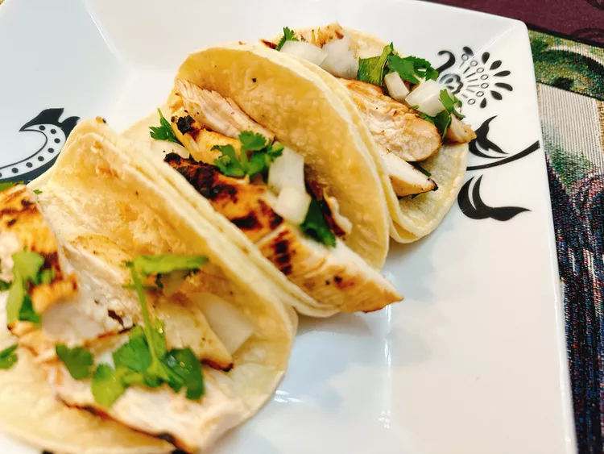

Chipotle-Citrus Marinated Chicken Tacos

Description
These chipotle-citrus chicken tacos don't get any easier than marinating chicken breasts and grilling the chicken, then assembling with fresh diced onion and cilantro on top of mini tortillas.
Ingredients
- 2 limes, juiced
- 1 orange, juiced
1/4 cup olive oil
- 1 chipotle pepper in adobo
- 3 cloves garlic
- 2 teaspoons ground cumin
- 1/2 teaspoon ground coriander
- 1 teaspoon salt
- 1/4 teaspoon freshly ground black pepper
- 1 pound boneless skinless chicken breasts
- 24 corn tortillas, street taco size
- 1 small onion, diced
- 1/4 cup chopped cilantro
Directions:
- Combine lime juice, orange juice, olive oil, chipotle pepper, garlic, cumin, coriander, salt, and black pepper in a blender. Blend on high until smooth.
- Pour marinade mixture into a resealable plastic bag. Add chicken breasts to the bag; marinate in the refrigerator for 3 hours.
- Preheat a grill to 375 degrees F (190 degrees C).
- Place marinated chicken breasts on the grill; close the lid. Discard the marinade. Grill, turning once, until chicken is no longer pink in the center and the juices run clear, 6 to 8 minutes per side. An instant-read thermometer inserted into the center should read at least 165 degrees F (74 degrees C).
- Remove chicken from grill. Let stand for 5 minutes; slice into strips.
- Heat tortillas over a griddle on medium heat until tortillas are soft and pliable. Stack tortillas in pairs; divide chicken, onion, and cilantro onto each pair of tortillas.
Home Page